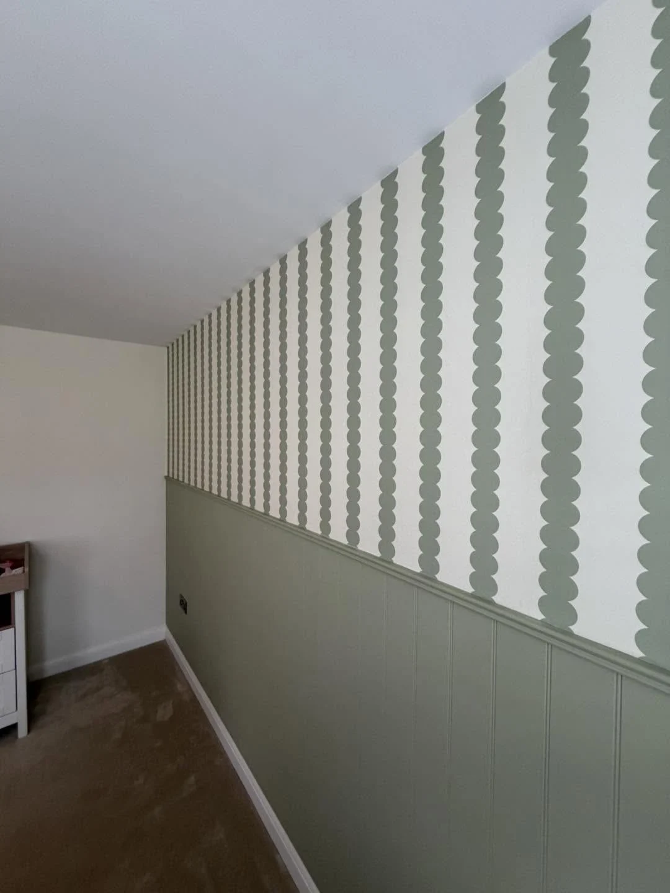
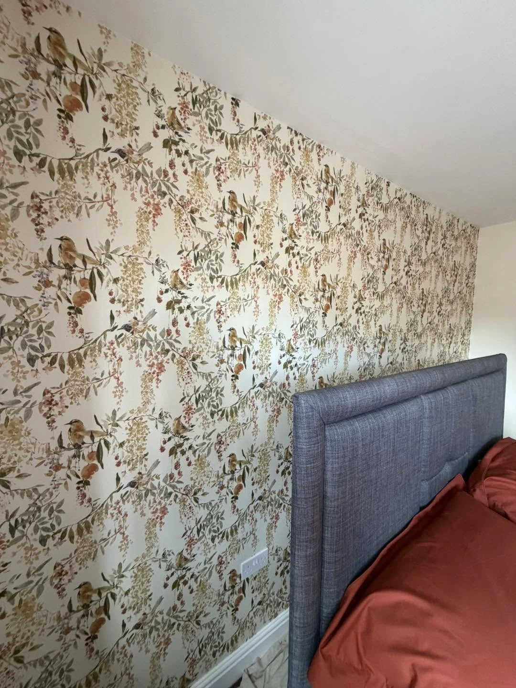
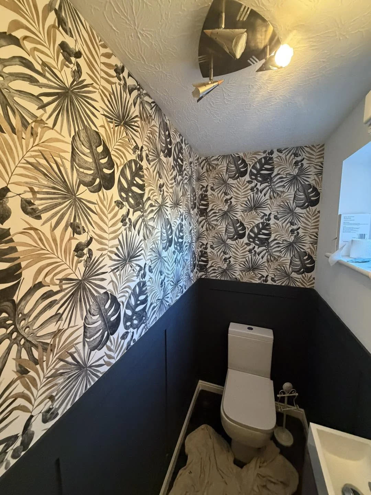

WILLIAMS DECORATORS · DERBY
Beautiful rooms.
Carefully finished.
Painting, decorating, wallpaper and murals in Derby. 35 years in the trade, with real transformations to help you picture the possibilities.
35 years in the tradeDerby
35 YEARS IN THE TRADE
Good decorating.
Down to the details.
Williams Decorators (Derby) Ltd. brings 35 years of trade experience to painting and decorating, with specialist work in wallpaper, murals and commercial wall coverings.
From clean paintwork to a statement feature wall, explore the real projects below. See the preparation, the colour choices and the finished result.
See the before & after projects →
BEFORE & AFTER
Preparation makes
the difference.
The same staircase, from filled walls and protective dust sheets to grey walls and freshly painted white woodwork.
BEFORE & AFTER
Look up.
See the change.
Bare plaster around the skylights becomes a clean, painted ceiling, bringing the conservatory together.
WALLPAPER & WALL COVERINGS
A room with
its own character.
Botanical prints, crisp repeat patterns and painted panelling. Bring your chosen paper or an idea for a mural and let’s discuss the finish you want.
Explore wallpaper & murals →

BEFORE & AFTER
A fresh colour.
A warmer welcome.
The original white entrance is refreshed in pale green, with contrasting white framing.
BEFORE & AFTER
From stripped back
to a bold finish.
Wall preparation followed by cream walls and a rich burgundy feature wall around the chimney breast.
OUR PROJECTS
Colour. Pattern. A fresh perspective.
A closer look at our interior and exterior decorating.
PLANNING YOUR PROJECT
A few useful answers.
Do you fit wallpaper and murals?
Yes. Williams Decorators specialises in wallpaper, murals and commercial wall coverings. Send the product details and approximate wall dimensions with your enquiry.
Can I see before-and-after work?
Yes. The projects page includes five paired transformations: a staircase, conservatory ceiling, front door, bedroom and garage exterior.
What should I send for a quote?
Include your postcode, rooms or surfaces, approximate dimensions, photographs and any chosen paint or wallpaper. Mention access and preferred timing.
Where do you work?
We are based in Derby. Send your postcode so we can confirm availability for your location.
YOUR DECORATING PROJECT
Let’s talk about your next room.
Tell us what you have in mind. This form opens a WhatsApp draft with all your details, ready for you to review, add photos and send.